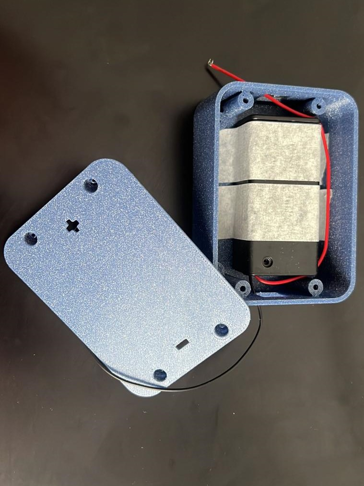
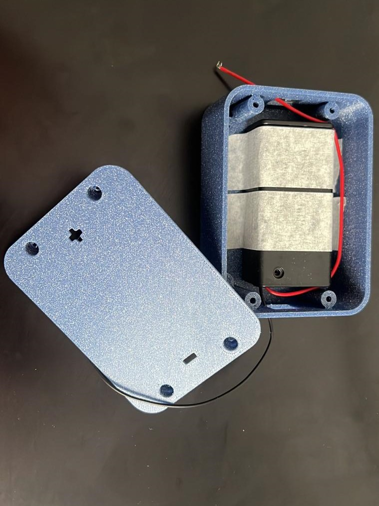

Hello!
I am an undergraduate student at Imperial College London, pursuing my integrated Masters in Engineering in Electrical Biomedical Engineering with a Year in Industry. This is a five year programme (2020 to 2025) where I spent one year in Boston, MA working at the VIC, Harvard Medical School and the Traverso Lab, MIT. I am interested in building medical devices/solutions and data analytics like signal processing for neurodegenerative diseases like Cerebral Palsy and Parkinson's Disease. Feel free to check out my past projects and resume from the navigation bar.


 
